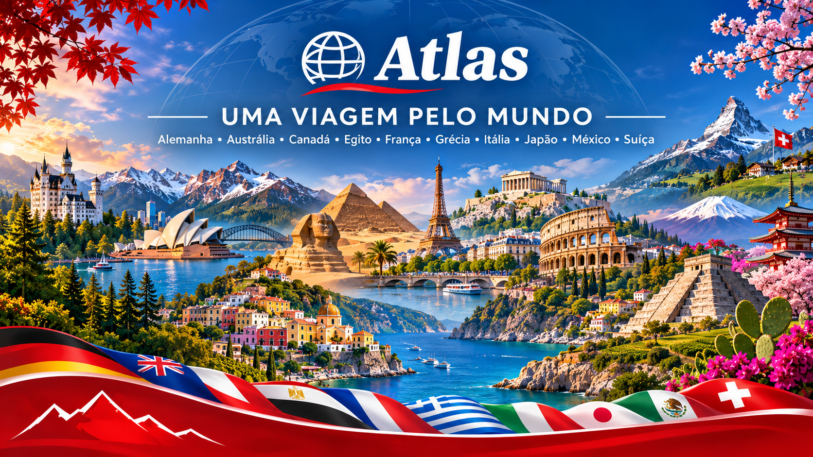

CONHEÇA O PROJETO
Sobre o Atlas
O Atlas é um projeto acadêmico criado para reunir diferentes países em um único site. A proposta é permitir que o usuário conheça assuntos relacionados à história, cultura, natureza, arte, gastronomia e outros temas através das páginas desenvolvidas pelo grupo.
Como funciona
A página inicial funciona como ponto central da navegação. Nela existe um mapa-múndi usado como referência visual e uma lista com todos os países disponíveis.
Ao selecionar um país, o usuário é levado para sua página correspondente.
Estrutura das páginas
Cada país possui uma estrutura própria, desenvolvida de acordo com o tema escolhido pelo integrante.
As páginas compartilham o mesmo estilo visual, as cores principais e a navegação, mantendo seus conteúdos individuais.
Países presentes no projeto

México | Grécia | Egito | Itália | Canadá | Alemanha | Suíça | Austrália | Japão | França
Em um momento do desenvolvimento, o grupo chegou a considerar uma possível troca de nome, mas decidiu manter Atlas, porque o título já representava bem a proposta do projeto e já estava integrado à identidade visual e à navegação do site.
Explorar países